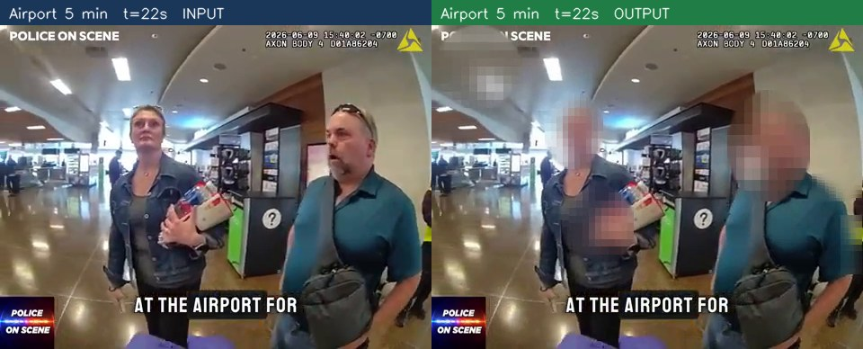
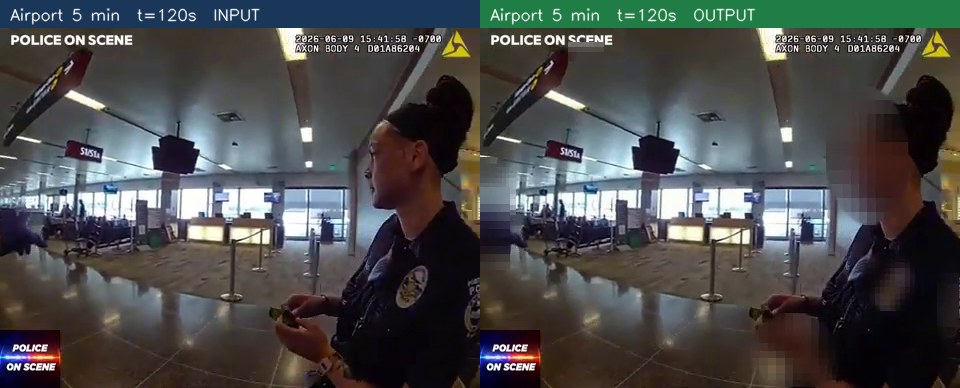
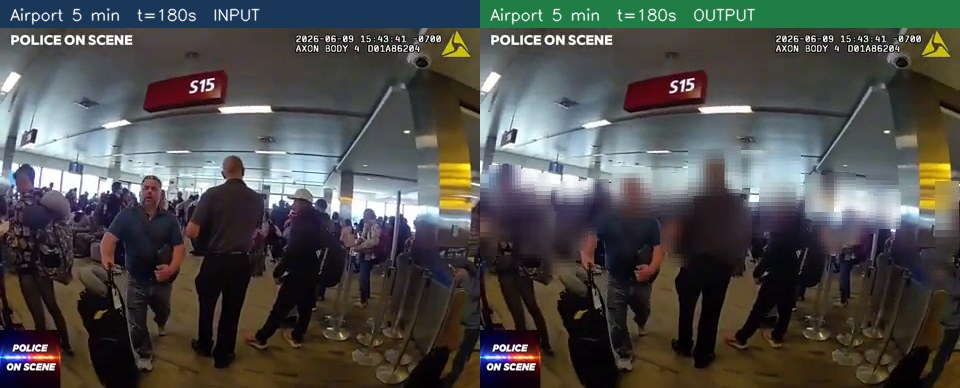
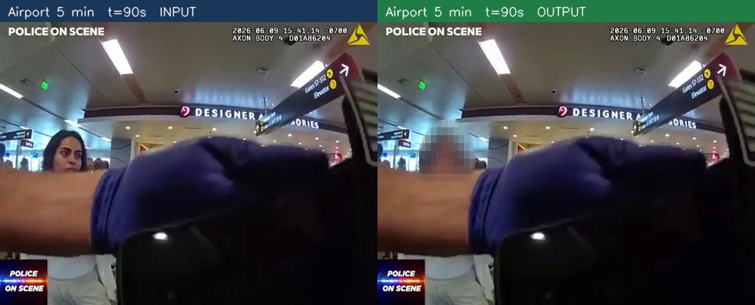
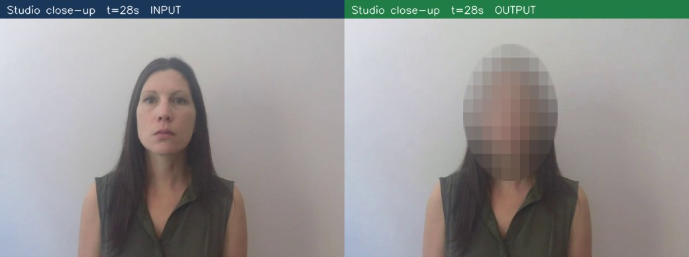
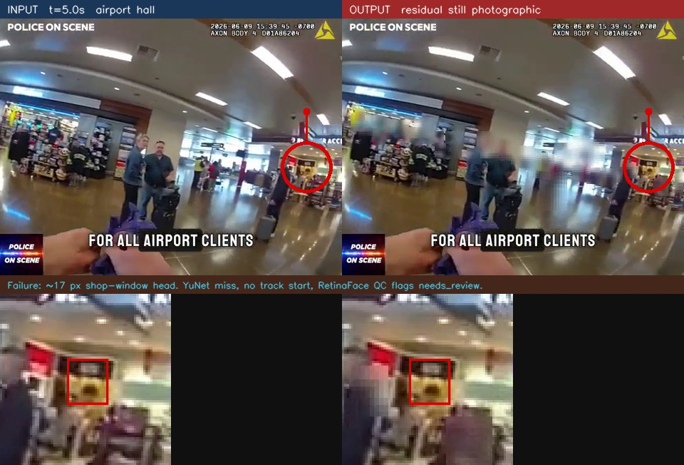
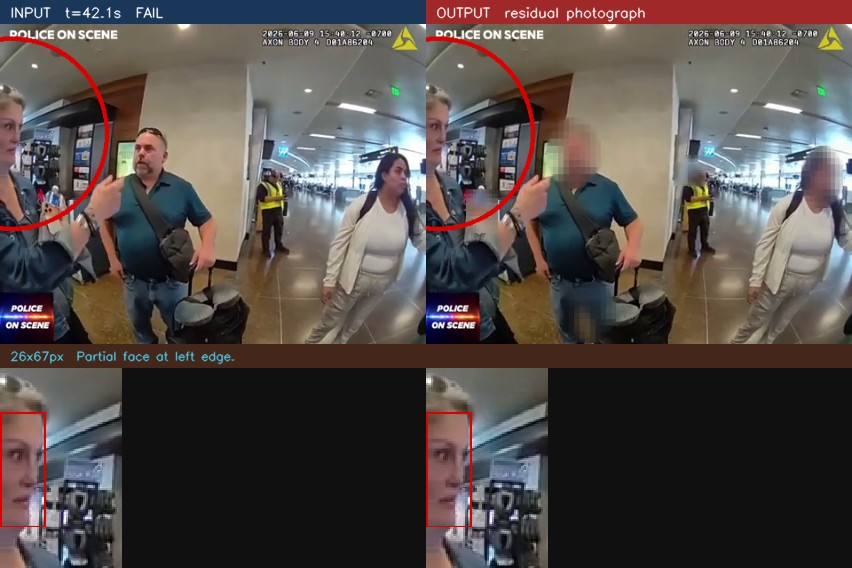
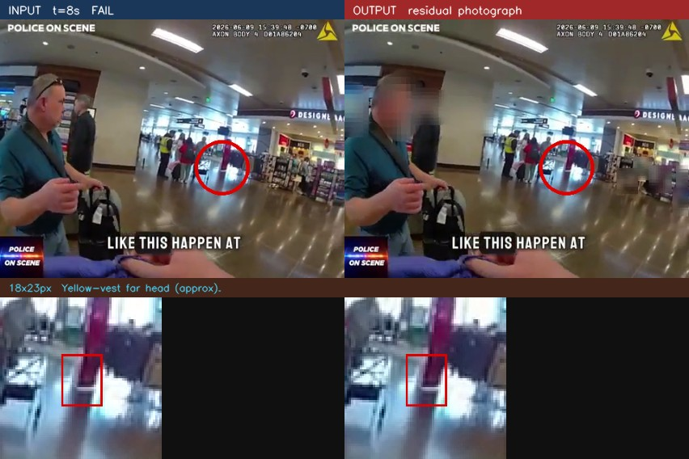
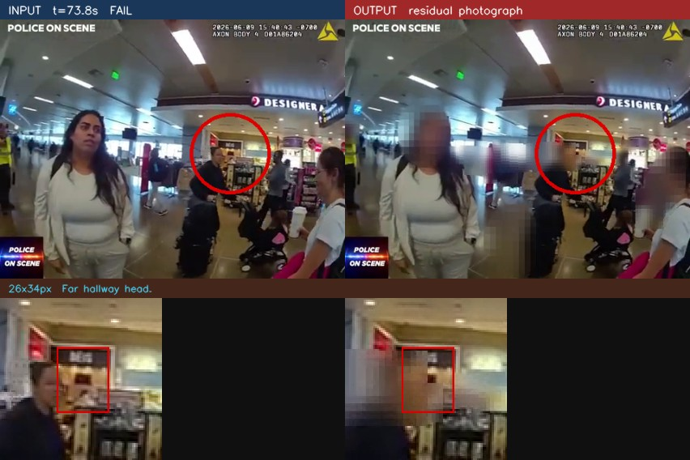

|
Technical assignment report
Body-camera face anonymization Detect, anonymize, and independently audit visible facesA working Python system for Pronto. It redacts faces it can find in body-cam video, audits the finished file with a second model, and does not encode the same upload twice.
Proxy evaluation. Not human-annotated ground truth. Spot-checked stills are in section 6. |
|||
|
Prepared for Pronto · 4 October 2026
|
| 1. The BriefWhat I was asked to build | |
| 2. What I BuiltThe working system in one page | |
| 3. ArchitectureJobs, live path, audit, and design principles | |
| 4. How It WorksDetect, track, blur, check | |
| 5. Problems I Hit, and How I Fixed ThemThe bugs that changed the design | |
| 6. Evaluation and ResultsMethodology, metrics, stills, one failure | |
| 7. AblationYuNet vs SCRFD, trackers, tiles, GPU | |
| 8. How to Read the CodeThe files that matter | |
| 9. What Is Still WeakLimits I would fix next | |
| 10. Next StepsPrivacy first, then quality, then speed | |
| 11. How to Run ItCommands for process, jobs, tests | |
| 12. SourcesThe two evaluation clips |
I read that as four jobs, not a demo that blurs a still photo:
Command: python -m face_anon process --input video.mp4 --output out.mp4. It writes a redacted file and a JSON sidecar. Exit 0 means automated QC found no residual visible face in the checked frames. Exit 2 means a person should look. QC is sampled, not exhaustive.
| Ask | What ships |
|---|---|
| Hide faces | YuNet boxes, ByteTrack with a 14-frame coast, hybrid blur plus mosaic in an ellipse |
| Hard footage | Upsample small frames, night CLAHE on a copy only, adaptive pad, streaming encode |
| Independent QC | RetinaFace on the output. A mosaic silhouette is not a leak. A crop that still fails residual_visibility (MAE ≥ 9 and Laplacian ≥ 22) is a residual visible face. |
| Duplicate events | SQLite job keyed by upload id and config hash, plus a cheap file fingerprint |
| Scale | YuNet on the live path (about 11 ms). RetinaFace only as auditor. GPU when present, CPU if not. |
Three lanes. The job store sits in front so a webhook can fire twice. The live path paints blur. The audit path looks at the finished file with a different model.
| Jobs |
|
|||||||
| Live path |
|
|||||||
| Audit |
|
| Live path stays cheap YuNet is about 11 ms on CPU. I can run it on every frame while people are in view. After 36 empty frames I detect every 4th frame. | Audit stays independent RetinaFace never paints the blur. GPU QC: 0.2 s grid (every 6th frame at 30 FPS) plus track-loss, dark and motion frames. On this clip: 4,440 / 9,000. CPU: 1.5 s / 120. |
|
Design principles
1. Recall over precision. A missed face is worse than extra blur. 2. Temporal continuity. Tracking bridges short detector misses. 3. Model diversity. YuNet anonymizes. RetinaFace audits. |
Fail closed
4. Review-gated output. Automated uncertainty never becomes automatic publication. 5. needs_review is safer than publishing an uncertain video. Exit 2, not a silent pass. |
| DetectLong side to 640. YuNet, score ≥ 0.18. Reject boxes that fail landmark-geometry sanity (or score < 0.75 on large boxes). | TrackByteTrack privacy thresholds 0.28 / 0.18. Coast 14 frames after a miss. Cannot start a track the detector never fired. | BlurAdaptive pad. Gaussian plus 10×10 mosaic in an ellipse on the eyes. | CheckRetinaFace on the output. Flag only a residual visible face (MAE ≥ 9 and Laplacian ≥ 22). |
I do not reject a box because it is large. Size is never a reject reason. Pad shrinks as the face fills the frame: far heads 42%, full-frame close-up 8%. Audio is copied. Metadata is stripped. This hides faces, not people.
These are the issues that actually changed the code. I include them because the first version was wrong in ways a paper would not warn you about.
| What went wrong | Why | What I did |
|---|---|---|
| Ovals covered the whole room | YuNet sometimes returns a torso or wall. A flat 42% pad then grew that box by about 1.8×. | Keep a large box only if the five landmarks pass the eyes-nose-mouth geometry check, or the score is ≥ 0.75. Shrink pad on close-ups. |
| A person on the lens was dropped | I had a rule: drop any box wider than 38% of the frame. That person is the frame. | Size is never a reject reason. Geometry and score are. |
| Far hallway heads leaked | 8 to 12 px on 360p is almost no signal if you only shrink the frame. | Upsample so the long side is 640. Coast the track. Let QC flag what is still visible. |
| Stock ByteTrack lost tiny faces | It starts a track only at score 0.50. Tiny faces rarely get there, so they never get a coast. | ByteTrack privacy thresholds: start 0.28, keep 0.18. Misses fell from 104 to 37. |
| GPU sat idle while QC was slow | RetinaFace was 159 ms on CPU. I sampled 120 frames and hoped. | Run QC on CUDA (3.9 ms). Check every 0.2 s. Fall back to the sparse sample if there is no GPU. |
| 960 px and tiles looked better on paper | They found a few more faces and a lot of walls. AP went down. Risk-gated tiles fired on 99.6% of airport frames. | Keep 640 on the live path. Use 960 only on a targeted retry. |
| Same upload encoded twice | A webhook can fire twice. Hashing a 64 GB file first would stall the disk. | Key = (upload_id, config_hash). Fallback = size + 1 MB from head, mid, tail. File lock around insert. |
| onnxruntime-gpu failed to start | 1.27 wanted CUDA 13. The box has driver 550 (CUDA 12). | Pin 1.23.2 and preload the pip NVIDIA libraries. |
| Level | What I measure | What it is not |
|---|---|---|
| Detector | Precision, recall, tiny-face recall, AP vs proxy boxes | Not human recall. Not a privacy guarantee. |
| Tracking | Tracked recall after coasting. Miss count vs the same proxy set. | Not identity tracking. Coast can paint extra ovals. |
| End-to-end privacy | Anonymization coverage, residual-face rate, QC leak count, % jobs that need review | QC is a sample. A pass is not “no face exists.” |
Anonymization coverage = fraction of input proxy faces with no overlapping residual visible face on the output (IoU ≥ 0.20). In code: covered_gt_faces / input_faces_proxy in eval_metrics.privacy_eval. On the 5-minute hall clip that is 1,054 / 1,058 = 0.996: four input proxy faces had a matching residual. Residual-face rate = 9 / 1,058 = 0.0085. These are not 1 − anonymization coverage. 1 − 0.996 = 4 / 1,058 unmatched proxy faces. Residual-face rate counts every residual visible face on the output (9), including boxes that do not IoU-match a proxy label. QC flags = residual visible faces on the sampled output frames (MAE ≥ 9 and Laplacian ≥ 22). A mosaic silhouette is not a flag.
Two clips only. Airport hall: first five minutes of https://youtu.be/JhRufABvrC4 (480×360, 9,000 frames). Ablation uses a longer cut of that same file. Studio: Intel IoT head-pose-face-detection-female.
| Clip | Speed | Privacy (proxy) |
|---|---|---|
| Airport hall, 5 min | 41.5 FPS (1.38×). GPU QC: 20.9 s on 4,440 of 9,000 frames (0.2 s grid + risk extras). | Anonymization coverage 0.996 (1,054 / 1,058). Residual visible faces: 9 (rate 0.0085). QC flags 28. needs_review. |
| Studio close-up | 31.2 FPS | 18 RetinaFace hits on the mosaic, 0 residual visible faces. Pass. |
I also looked at eight stills by eye (close, profile, mid-range, far, crowd). Every close and mid-range face I marked was either detected on that frame or carried by the tracker from a neighbour. The misses I could confirm were far heads under 16 px, which matches the proxy ablation. I did not box the full five minutes. That is still the main evaluation gap.
The 28 QC flags are tiny far heads, not a crash. The job stops at review instead of publishing. Uploading the same file twice reused the job and did not encode again.
|
 Figure 1. Airport hall, t = 22 s. Mid-range faces are covered.
|
 Figure 2. Airport hall, t = 120 s. Profile close-up. The oval stays on the head.
|
|
 Figure 3. Airport hall, t = 180 s. Dense group. Near faces are painted. Far queue heads are the leak class.
|
 Figure 4. Airport hall, t = 90 s. Odd viewpoint: an arm fills the lens, a face sits behind it.
|
|
 Figure 5. Studio close-up. A full-frame face is kept. Size is never a reject reason.
|
Four of the 28 QC flags on the 5-minute hall clip. Near faces in the same frames are covered. The job exits needs_review and does not auto-publish.
|
 Figure 6. Tiny far head, t = 5 s, ~17 px in a shop window. YuNet misses it, so no track starts. QC still sees a residual visible face.
|
 Figure 7. Frame-edge entry, t = 42 s. A face is half off-screen. The live path does not paint it. The residual is obvious on the output.
|
|
 Figure 8. Far hallway head, t = 8 s. The yellow vest is a few pixels. Close faces in the same frame are covered. This is the 8–16 px leak class.
|
 Figure 9. Far desk head, t = 74 s. The live path sometimes paints a weak oval; QC still scores a residual and keeps the job in review.
|
I implemented the heavier graph too: SCRFD-10G, 960 px, tiles, and stock ByteTrack. The model comparison used a longer cut of the same airport hall (not a new scene). Labels: RetinaFace on every 15th input frame. 2,404 frames, 3,690 faces.
| Model | CPU | GPU | Why it matters |
|---|---|---|---|
| YuNet 640 | 10.8 ms | CPU only | Cheap enough for every frame |
| SCRFD-10G 640 | 132 ms | 3.6 ms (10.6 in my loop) | Fine on GPU, too slow on CPU. Loop time includes letterbox and NMS. |
| YuNet / SCRFD tiles | 160 ms | 27 ms | 3× to 15× cost |
| RetinaFace (QC) | 159 ms | 3.9 ms (41×) | This is the GPU win. Dense audit becomes possible. |
After warm-up, batch 1, NVIDIA L40S / CPU. Detector-only numbers exclude video decode and encode. End-to-end FPS includes both. I do not have p50/p95 yet. Production benchmarking should add them. SCRFD’s 3.6 ms kernel vs 10.6 ms in-loop gap is preprocess and postprocess, not the GPU kernel lying.
| Config | Recall | Precision | F1 | Missed | Tiny < 16 px | AP |
|---|---|---|---|---|---|---|
| YuNet 640 | 0.969 | 0.493 | 0.653 | 113 | 0.979 | 0.947 |
| YuNet 960 | 0.975 | 0.436 | 0.602 | 91 | 0.983 | 0.936 |
| YuNet tiles | 0.988 | 0.292 | 0.451 | 44 | 0.990 | 0.923 |
| SCRFD 640 GPU | 0.960 | 0.566 | 0.712 | 148 | 0.937 | 0.939 |
| SCRFD tiles | 0.977 | 0.448 | 0.614 | 86 | 0.960 | 0.933 |
For this privacy job, recall is the primary objective: a false negative exposes a face. False positives mainly add extra blur, so precision is a constraint on usability, not the thing I maximise. F1 is shown as a conventional summary. I did not pick the operating point to maximise F1. YuNet has better tiny-face recall. SCRFD paints fewer junk boxes. 960 and tiles buy recall and lose AP. On 931 faces under 16 px, YuNet misses 20 and SCRFD misses 59. That is the leak class, so YuNet stays the default.
ByteTrack with privacy-oriented thresholds is not a published ByteTrack variant. In my stock ByteTrack configuration, a new track required a 0.50 detection score. Tiny hallway heads rarely get there, so they never get a coast. I start tracks at 0.28 and keep them at 0.18 so a weak detection can hold a mask. High recall is the point: starting from a weak box is better than leaving a face unmasked. ByteTrack cannot recover a face the detector never fired on. It only coasts a box that existed at least once. That is why an 8–12 px miss stays a miss until QC flags it.
| Setup | Recall | Missed | Tiny recall |
|---|---|---|---|
| YuNet, no tracker | 0.969 | 113 | 0.979 |
| YuNet + IoU coast | 0.987 | 48 | 0.990 |
| YuNet + ByteTrack (stock, start 0.50) | 0.972 | 104 | 0.954 |
| YuNet + ByteTrack (privacy thresholds 0.28 / 0.18) | 0.990 | 37 | 0.993 |
| SCRFD + ByteTrack (privacy thresholds) | 0.981 | 69 | 0.964 |
Association costs under 0.2 ms. The only trade is extra paint versus fewer misses. For this brief I take the extra paint.
| YuNet CPU (default) | SCRFD GPU | |
|---|---|---|
| Throughput | 41.5 FPS (1.38×) | 57.4 FPS (1.91×) |
| Detect, in the loop | 14.1 ms | 10.6 ms |
| QC flags (residual visible faces) | 28 on 4,440 frames | 28 on 4,120 frames |
| Residual visible faces / residual-face rate | 9 / 0.0085 | 5 / 0.0047 |
| Anonymization coverage on 1,058 proxy faces | 0.996 (1,054 / 1,058) | 0.997 (1,055 / 1,058) |
Start at the command, then the loop, then the pieces the loop calls. Do not start in the detectors.
| 1. cli.pyprocess, submit, worker, status, eval | 2. pipeline.pyRead, detect, track, blur, write, QC | 3. factory.pyWhich detector and tracker to build | 4. The restOne job each. See the table. |
| File | What is in it |
|---|---|
| cli.py | CLI: process, submit, worker, status, eval. |
| pipeline.py | Main video loop: detect, track, blur, write, QC, optional retry. |
| preprocess.py | Resize to 640, dark-frame CLAHE. |
| detect_yunet.py | Default live finder. OpenCV, CPU. |
| detect_scrfd.py | Optional live finder. InsightFace det_10g. |
| detect_retinaface.py | Auditor only. Never paints blur. |
| track.py | IoU coast and ByteTrack with privacy-oriented thresholds. |
| anonymize.py | Gaussian + mosaic inside a rotated ellipse. |
| video_io.py | Decode, NVENC/x264, copy audio, strip metadata. |
| qc.py | Sampled residual-visible-face test. |
| jobs.py | Idempotent queue: upload id, config hash, file lock. |
| factory.py | Build detector, tracker, and QC from YAML. |
Knobs live in configs/default.yaml. Change finding or blur? Bump pipeline_version so old jobs are not treated as the same work. Extra configs: cpu_yunet.yaml, gpu_scrfd.yaml.
| Limit | What I would do next |
|---|---|
| Far 8 to 12 px heads. 37 of 3,690 still missed. | A person or head detector every few frames. Bigger face nets and tiles already lost AP. |
| QC is still a sample (0.2 s grid + extras on GPU, 1.5 s / 120 on CPU). | TensorRT, every-frame QC on GPU. Show a reviewer only the leftover crop. |
| A face hidden longer than about 0.5 s drops. | Track the body, not only the face. |
| ByteTrack with privacy thresholds paints about two ovals per real face in this hall. | Acceptable here. A head detector would drop junk boxes. |
| Mirrors, posters, phone screens. | Those are faces. I usually want them blurred. |
| Audio, tattoos, nameplates, gait. | Out of scope. This is face redaction. |
| Labels are RetinaFace, not a person. I only spot-checked eight stills. | A boxed human set on the hard frames (close, 8–16 px, profile, blur). The scripts already take a box list. |
The default stack is good enough to ship as a review-gated worker. Priority order: privacy (recall) → output quality (precision) → cost and latency. The leftover work is not “add tiles everywhere.”
| 1. Raise recall (privacy) The 37 misses on the long cut are 8 to 12 px heads, not a detector crash. A person detector plus a face crop on that region beats full-frame 960 and tiles, which already lost AP. Keep painting while a body is still in view, even if the face is hidden for more than 0.5 s. Use the existing retry path on QC leak frames only: 960 or a small tile there, never on every frame. Box a human set on those hard frames so the recall number is not only a RetinaFace proxy. | 2. Raise precision (output quality) ByteTrack with privacy-oriented thresholds paints about two ovals per real face in this hall. A cheap person or head box every few frames would drop torso and wall hits before they get a coast. Tighten the landmark gate on large, low-score boxes. Run SCRFD only as a second opinion on tracks that YuNet is unsure about. |
| 3. Make it faster (cost / latency) End-to-end is CPU-bound. YuNet is 11 ms. Blur and the Python frame loop dominate, and the GPU sits idle during encode. Move the ellipse blur onto CUDA or a small compiled kernel. Batch RetinaFace QC and compile it with TensorRT so the auditor can look at every frame. Split a long file into 2 to 5 minute chunks. Do not upsample empty hallway frames. Add p50/p95/p99 on the same bench. | What I would not do I would not put SCRFD, 960, or tiles on the live path by default. I would not GAN-inpaint a fake face. I would not auto-publish needs_review. Those choices already showed up as lower AP, extra cost, or a privacy risk. |
pip install -e . pip install onnxruntime-gpu==1.23.2 # optional python -m face_anon download-models --sample PYTHONPATH=src python -m face_anon process \ --input data/samples/airport_5min.mp4 \ --output outputs/airport_5min_anon.mp4 PYTHONPATH=src python -m face_anon submit --upload-id evt-001 \ --input data/samples/airport_5min.mp4 PYTHONPATH=src python -m face_anon worker --once PYTHONPATH=src python -m pytest -q PYTHONPATH=src python scripts/run_ablation.py --video data/samples/airport_full.mp4
[1] Airport hall body-camera footage. Axon Body 2 recording in a public terminal (on-screen overlay: POLICE ON SCENE). Used as the 5-minute end-to-end clip and, in a longer cut of the same file, as the ablation set. https://youtu.be/JhRufABvrC4
[2] Studio close-up. Intel IoT Devkit sample video head-pose-face-detection-female. https://github.com/intel-iot-devkit/sample-videos
[3] YuNet. Wu, Chen, and Ye. “YuNet: A Tiny Millisecond-level Face Detector.” OpenCV Zoo.
[4] SCRFD. Guo et al. “Sample and Computation Redistribution for Efficient Face Detection.” InsightFace det_10g.
[5] RetinaFace. Deng et al. “RetinaFace: Single-Shot Multi-Level Face Localisation in the Wild.” CVPR 2020.
[6] ByteTrack. Zhang et al. “ByteTrack: Multi-Object Tracking by Associating Every Detection Box.” ECCV 2022. Privacy-oriented thresholds here are mine, not a stock preset.
Prepared for Pronto by Shivam. Pipeline 1.2.0. Demo: outputs/full/airport_5min_default.mp4. Ablation: outputs/demo/ablation_full.json. Coverage recompute: outputs/demo/privacy_eval_yunet_600.json.